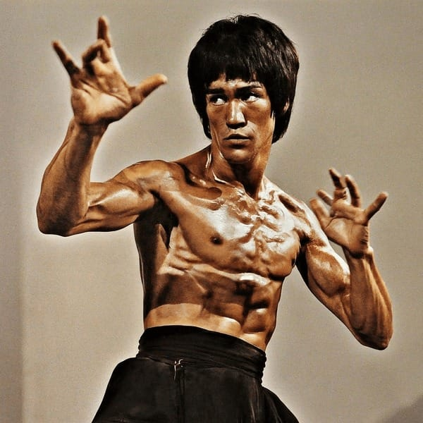

Bruce Lee
"The Dragon who Redefined Martial Arts and Philosophy"

"I fear not the man who has practised 10,000 kicks once,but I fear the man who had practised a single kick 10,000 times."-Bruce Lee
Bruce Lee was a Hong Kong-American martial artist,actor,filmmaker,and philosopher.He is regarded as first global Chinese film star and one of the most influential martial artists in the history of cinema
About Bruce Lee
Bruce Lee was a legendary martial artist,actor,and filmmaker who revolutionized martial arts and action cinema.Bruce Jun Fan Lee was born in San Francisco and raised in Hong Kong,Lee's early exposure to martial arts shaped his journey toward becoming one of the most iconic figures in history.He is widely credited with breaking down cultural barriers.
Bruce Lee's impact wasn't confined to the dojo.As an actor,he shattered stereotypes in Hollywood by bringing intense,electrifying action to the silver screen.Films like "Enter the Dragon" and "The Way of the Dragon" showcased his incredible speed,precsion,and agility,while his charisma and unique fighting style captivated audiences worldwide.Lee's on-screen presence and powerful performances transcended cultural barriers,making him a global sensation.
His philosophy of self improvement,pushing past limit,and challenging societal norms continues to inspire martial artists,athletes,and everyday individuals to reach their fullest potential-both physically and mentally.Bruce Lee didn't just fight on screeen;he fought for vision of breaking boundaries,both in martial arts and in life.
read more about Bruce Lee
"I fear not the man who has practised 10,000 kicks once,but I fear the man who had practised a single kick 10,000 times."-Bruce Lee
Bruce Lee was a Hong Kong-American martial artist,actor,filmmaker,and philosopher.He is regarded as first global Chinese film star and one of the most influential martial artists in the history of cinema
About Bruce Lee
Bruce Lee was a legendary martial artist,actor,and filmmaker who revolutionized martial arts and action cinema.Bruce Jun Fan Lee was born in San Francisco and raised in Hong Kong,Lee's early exposure to martial arts shaped his journey toward becoming one of the most iconic figures in history.He is widely credited with breaking down cultural barriers.
Bruce Lee's impact wasn't confined to the dojo.As an actor,he shattered stereotypes in Hollywood by bringing intense,electrifying action to the silver screen.Films like "Enter the Dragon" and "The Way of the Dragon" showcased his incredible speed,precsion,and agility,while his charisma and unique fighting style captivated audiences worldwide.Lee's on-screen presence and powerful performances transcended cultural barriers,making him a global sensation.
His philosophy of self improvement,pushing past limit,and challenging societal norms continues to inspire martial artists,athletes,and everyday individuals to reach their fullest potential-both physically and mentally.Bruce Lee didn't just fight on screeen;he fought for vision of breaking boundaries,both in martial arts and in life.